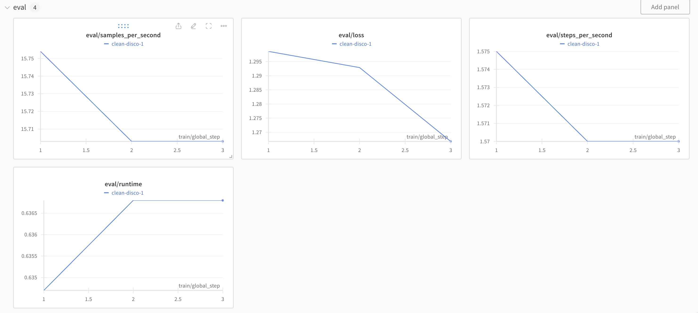

Modifying llm-finetune Example
As part of the Mastering LLMs Conference that I'm attending, I fine-tuned my first model! Using credits provided by Modal and following their LLM Fine Tuning example guide, I was able to get it running.
The next step I wanted to take was to modify the course example, available at this GitHub repo, to run in Modal.
tl;dr after a bit of trial and error, it was easy to get running!
Weights and Biases
In the existing config, there was a section for wandb setup. I signed up for an account and modified my local run to be:
During that run, I received an error:
wandb: ERROR It appears that you do not have permission to access the requested resource. Please reach out to the project owner to grant you access. If you have the correct permissions, verify that there are no issues with your networking setup. (Error 403: Forbidden)
The fix was to remove the wandb_entity key and, from the Modal docs, add wandb_watch: gradients.

Diff for ftcourse
I commented out the dataset_prepared_path as I wasn't sure if it was going to be needed. Additionally, I did not want to upload the model to HuggingFace, so I removed that line.
diff --git a/hc.yml b/hc.yml
index a57b51f..d8e9c73 100644
--- a/hc.yml
+++ b/hc.yml
@@ -12,13 +12,12 @@ data_seed: 49
seed: 49
datasets:
- - path: sample_data/alpaca_synth_queries.jsonl
+ - path: data.jsonl
type: sharegpt
conversation: alpaca
-dataset_prepared_path: last_run_prepared
+#dataset_prepared_path: last_run_prepared
val_set_size: 0.1
output_dir: ./qlora-alpaca-out
-hub_model_id: hamel/hc-mistral-alpaca
adapter: qlora
lora_model_dir:
@@ -41,8 +40,8 @@ lora_target_modules:
- k_proj
- o_proj
-wandb_project: hc-axolotl-mistral
-wandb_entity: hamelsmu
+wandb_project: hc-axolotl-test
+wandb_watch: gradients
gradient_accumulation_steps: 4
micro_batch_size: 16
The following command was run from the llm-finetuning directory:
ALLOW_WANDB=true modal run --detach src.train --config=/path/to/ftcourse/hc.yml --data=path/to/ftcourse/sample_data/alpaca_synth_queries.jsonl
Conclusion
I was able to complete the runs and use the inference API to interact with the model.
The model's response was not exactly what I was hoping for, but I learned a lot!
👤: Honeycomb is an observability platform that allows you to write queries to inspect trace data. You are an assistant that takes a natural language query (NLQ) and a list of valid columns and produces a Honeycomb query.
Instruction: NLQ: 'Exception count by exception and caller'
Columns: ['error', 'exception.message', 'exception.type', 'exception.stacktrace', 'SampleRate', 'name', 'db.user', 'type', 'duration_ms', 'db.name', 'service.name', 'http.method', 'db.system', 'status_code', 'db.operation', 'library.name', 'process.pid', 'net.transport', 'messaging.system', 'rpc.system', 'http.target', 'db.statement', 'library.version', 'status_message', 'parent_name', 'aws.region', 'process.command', 'rpc.method', 'span.kind', 'serializer.name', 'net.peer.name', 'rpc.service', 'http.scheme', 'process.runtime.name', 'serializer.format', 'serializer.renderer', 'net.peer.port', 'process.runtime.version', 'http.status_code', 'telemetry.sdk.language', 'trace.parent_id', 'process.runtime.description', 'span.num_events', 'messaging.destination', 'net.peer.ip', 'trace.trace_id', 'telemetry.instrumentation_library', 'trace.span_id', 'span.num_links', 'meta.signal_type', 'http.route']
Response: 🤖: